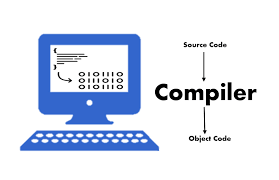
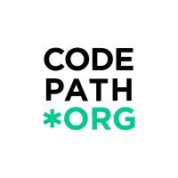

Projects
Recipe Generator
- Developed a multi-page recipe generator using Google Cloud Platform, Streamlit, and Vertex AI.
- Integrated user inputs to create custom recipes and visuals, with BigQuery for data storage.
- Added advanced features like macro tailoring, recipe downloads, drink generation, and meal portioning.
Compiler Project
- Built a complete compiler from scratch for a custom J language as part of a class project.
- Utilized yacc and lex to translate high-level code into efficient Assembly.
- Optimized parsing algorithms to improve code generation accuracy and ensure compliance with language specifications.


CodePath Web Project
- Designed and developed a responsive personal website during the CodePath cohort.
- Focused on promoting healthier lifestyles through exercise, nutrition, and mental wellness practices.
- Incorporated user-friendly design, SEO optimization, and interactive features using JavaScript, HTML, and CSS.